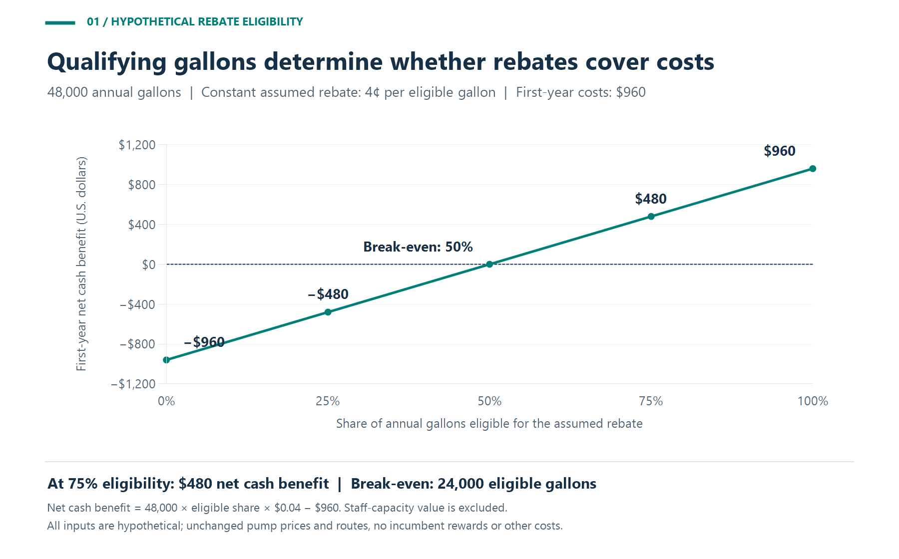
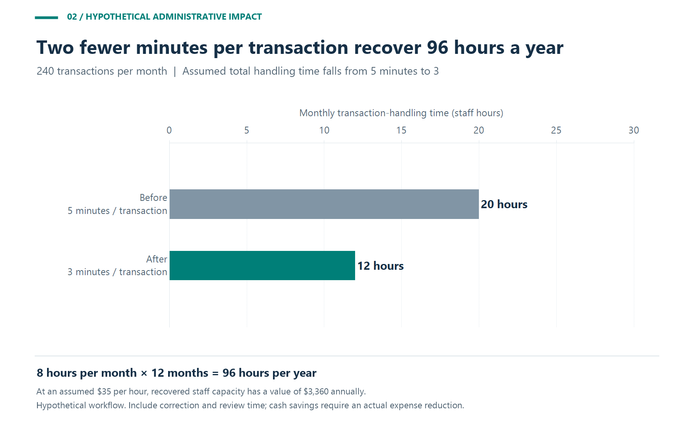
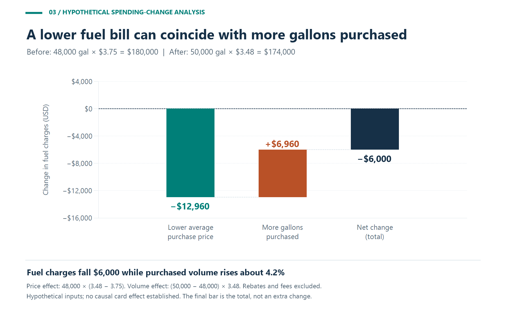

A fuel card can give fleet managers more control over purchasing, a clearer record of fuel spending, and a more structured way to review expenses. Its financial impact depends on the purchases that qualify for savings, the costs of the program, and what managers do with the information. A rebate, an administrative improvement, and a reduction in fuel consumption should each have their own measure of success.
For a U.S. fleet, the useful question is practical: does the selected card help the business spend less, reduce unnecessary work, or make better decisions about its vehicles?
Business Fleet Solutions advertises purchase limits, driver IDs, fueling reports, and online card activation, suspension, and termination across its Shell card offerings. Its comparison page lists Shell Card Business acceptance at over 12,000 Shell stations and Shell Card Business Flex acceptance at over 95% of U.S. fueling stations. It also advertises rebates of up to 6 cents per gallon. These are provider descriptions and an advertised ceiling, not measured fleet savings. Confirm the selected product's eligibility, fees, reporting access, and current terms before estimating its value.¹
The management opportunity is to connect those capabilities to specific responsibilities. Give purchasing rules an owner, connect transactions to the right records, and decide who investigates exceptions.
| Area of impact | What to evaluate | What would demonstrate value? |
|---|---|---|
| Fuel purchasing | Qualifying gallons, earned credits, station prices, and fees | A lower comparable net cost |
| Administrative work | Time spent collecting, coding, checking, and reconciling transactions | Fewer total staff hours for the same workload |
| Spending control | Available restrictions and the exception-review process | Documented corrections or avoided losses |
| Driver accountability | Card assignments, driver IDs, and supporting records | Purchases that can be reliably matched and explained |
| Management reporting | Data completeness, reporting delay, and responsible reviewers | Reports that lead to timely, documented decisions |
Start with the rebate the fleet expects to earn on qualifying purchases. Applying an advertised maximum to every gallon can overstate the result when eligibility or the earned rate differs.
Consider a hypothetical fleet of 20 vehicles purchasing 48,000 gallons annually. Assume 75% of those gallons qualify for a constant 4-cent rebate.
| First-year input or calculation | Illustrative amount |
|---|---|
| Total fuel purchased | 48,000 gallons |
| Share qualifying for the rebate | 75% |
| Eligible gallons: 48,000 × 75% | 36,000 gallons |
| Gross rebate: 36,000 × $0.04 | $1,440 |
| Card fees: 20 cards × $2 × 12 months | $480 |
| Reporting charge: $20 × 12 months | $240 |
| Initial setup cost | $240 |
| Total first-year program costs | $960 |
| Net first-year cash benefit: $1,440 − $960 | $480 |
Across all 48,000 gallons, the gross rebate averages 3 cents per gallon. After the assumed costs, the cash benefit averages 1 cent per gallon. This example assumes unchanged pump prices, routes, and fuel consumption; no existing rewards; and no additional transaction, financing, or integration costs.
Compare the final price at usable stations. Fuel priced at $3.70 with a 4-cent rebate costs $3.66 per gallon. A convenient alternative at $3.63 is 3 cents cheaper; on a 25-gallon purchase, that difference is $0.75. Add any extra driving distance or staff time before choosing a more distant stop.
The annual model also shows why qualifying volume matters. At the same assumed 4-cent rate and $960 in first-year costs, the rebate covers costs when 24,000 gallons qualify—50% of annual purchases.
Figure 1. Hypothetical rebate eligibility sensitivity for 48,000 annual gallons. Break-even occurs at 24,000 eligible gallons; staff-capacity value is excluded.
Configure the selected program around a written purchasing policy. Specify authorized users, permitted products, appropriate limits, and an escalation route for unusual situations. Test how the rules work at the pump before expanding the rollout.
Use exception review to ask focused questions: was the purchase authorized, was the vehicle assignment correct, and does the supporting record explain the amount? An alert should trigger investigation. It is not proof of fraud, and a declined purchase is not automatically a dollar saved.
For driver accountability, maintain current card and driver assignments, record changes when a vehicle is reassigned, and define who handles a lost card. Count a control-related financial benefit only when the business can substantiate the loss avoided or the amount recovered.
The General Services Administration's GSA SmartPay fleet training describes account-activity, exception, invoice-status, and transaction-dispute reports, plus a detailed electronic transaction file for financial-system processing. It says most electronic reports update within two to three days after a transaction, while some update at billing-cycle end.²
For an illustrative workload of 240 transactions per month, assume handling time falls from 5 minutes to 3 minutes per transaction:

Figure 2. Hypothetical administrative workload. Recovered hours represent capacity unless an actual cash expense declines.
At an assumed loaded labor cost of $35 per hour, 96 hours has an annual capacity value of $3,360. That becomes cash savings only if an actual expense falls. Otherwise, identify the work the team can complete with the recovered time.
| Measure | Suggested calculation or check | Management question |
|---|---|---|
| Net fuel purchase cost | Fuel charges less earned credits, fees shown separately | What did purchasing actually cost? |
| Weighted price per gallon | Comparable fuel charges ÷ corresponding gallons | Did price changes explain the spending change? |
| Eligible purchase share | Qualifying gallons ÷ total gallons | Is the assumed rebate opportunity being realized? |
| Administrative effort | Total processing and correction minutes | Is the workflow saving staff time? |
| Unresolved exceptions | Count, age, and documented reason | Which issues still need action? |
| Data completeness | Expected records and required fields present | Is the reporting period ready for comparison? |
The U.S. Department of Energy's FleetDASH methodology uses purchase dates, fuel types, station information, quantities, and organizational assignments. The same methodology documents delayed or missing purchases, miscoded fuels, inaccurate station locations, and incorrect vehicle information. Those limitations make data checks essential before interpreting a report.³
A transaction's station and timestamp describe a purchase event. They do not establish a vehicle's continuous route or live location. Evaluate GPS tracking, telematics, dispatch, and maintenance requirements separately, and verify any proposed integration with the exact systems in use.
Suppose a fleet buys 48,000 gallons at an average $3.75 per gallon in one year, then 50,000 gallons at $3.48 the next. The fuel bill falls from $180,000 to $174,000 — a $6,000 decrease — even though purchased volume rises by 2,000 gallons.
Separate that change using price and volume effects:

Figure 3. Hypothetical decomposition of a fuel bill falling from $180,000 to $174,000 despite higher purchased volume. No causal fuel-card effect is established.
The arithmetic explains the bill; it does not establish why prices or volume changed. Before attributing an improvement to the card, examine comparable station prices, miles driven, vehicle mix, workload, and documented operational changes.
Begin with a baseline that covers representative work and a complete reporting cycle. Record transaction volume, qualifying purchases, prices, fees, processing time, and unresolved exceptions. Then pilot the proposed configuration with vehicles that reflect the fleet's routes and purchasing needs.
At review, separate three results: verified cash benefit, recovered staff capacity, and operational improvements that still need financial evidence. In the 20-vehicle example, $480 of first-year cash benefit plus $3,360 of assumed staff-capacity value produces $3,840 in combined economic value. Only $480 is modeled as a reduction in cash expense.
If only 25% of gallons qualify at the assumed rate, gross rebates would be $480 and first-year cash benefit would be negative $480. A program can still justify its cost through a demonstrated workflow improvement, but the business should make that tradeoff explicitly.
The strongest management impact comes from a program whose acceptance fits the fleet, whose controls fit the work, and whose reports lead to action. Choose it against measured purchasing and administrative needs, then keep checking whether the expected benefits appear in the operating results.
1. Business Fleet Solutions: Shell Fleet Cards | Fuel Cards with Rewards and Rebates.
https://www.businessfleetsolutions.com/
2. GSA SmartPay: Lesson 5: Reporting Tools.
https://training.smartpay.gsa.gov/training_fleet_pc/lesson05/
3. U.S. Department of Energy: FleetDASH — Data Processing Methodologies.
https://afdc.energy.gov/FleetDASH/